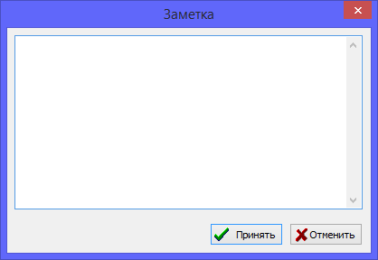

Заметки предназначены для хранения небольших текстов к различным записям базы данных. Также в них можно помещать фрагменты текста источников, рабочие комментарии к персонам, семьям или мультимедиа-материалам, заметки о ходе исследований, информацию об истории географических мест и др.
Заметки не предназначены для хранения больших документов с оформлением. Такие документы полагается вводить в базу как мультимедиа-материалы. На любую заметку может ссылаться любое количество других записей.

Все имеющиеся в базе данных заметки доступны через единую таблицу на закладке "Заметки" основного рабочего окна. Справа от таблицы - в сводке по записи заметки, можно просмотреть список всех других записей, которые ссылаются на данную.